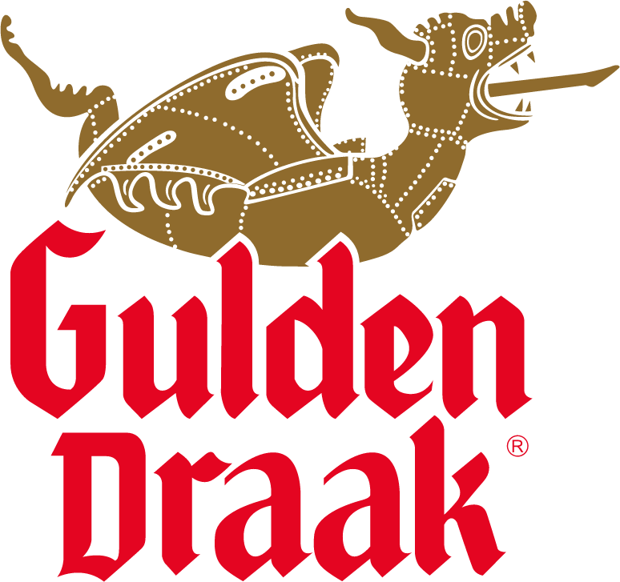

Gulden Draak
Gulden Draak은 벨기에의 Brouwerij Van Steenberge가 양조하는 알코올 도수 10.5%의 짙은 색 맥주이다. 네덜란드어로 '황금 용'을 뜻한다.
최종 업데이트

Gulden Draak는 어떤 브랜드인가
이 맥주는 동플랑드르의 Ertvelde에 있는 Brouwerij Van Steenberge에서 양조되며 알코올 도수는 맥주로서 높은 10.5%이다. 이름은 겐트 종탑 꼭대기에 있는 황금 용에서 따왔으며, 네덜란드어로 '황금 용'을 뜻한다.
향은 알코올 냄새가 강해 정의하기 쉽지 않지만 보리, 익은 자두, 체리의 강한 향이 있으며, 세계 각지의 평가자들은 달콤한 커피 향도 언급한다. 맛은 향보다 알코올의 영향을 덜 받으며 신 체리와 흑설탕을 떠올리게 하고 뒷맛은 다소 쓰다.
색은 어둡고 거품은 캐러멜색이다. 1998년 American Tasting Institute(현 ChefsBest)로부터 세계에서 가장 맛있는 맥주로 선정되었다.
Gulden Draak의 브랜드 아이덴티티는 무엇인가
알코올 도수 10.5%의 짙은 색 벨기에 맥주로, 2차 발효에 와인 효모를 쓰고 병과 배럴 안에서 발효시켜 수년간 보존할 수 있는 점이 특징이다.
Gulden Draak의 대표 제품과 서비스는 무엇인가
대표 제품은 알코올 도수 10.5%의 짙은 색 Gulden Draak이다. Gulden Draak 9000 Quadruple은 같은 10.5% 도수의 옅은 색 quadrupel 변형이며, 겐트의 우편번호 9000에서 이름을 따왔다.
맥아 세 종류를 사용하고 2차 발효에는 와인 효모를 쓴다. The Brewmasters Edition은 일반 Gulden Draak을 쓰던 위스키 배럴에서 일정 기간 두어 만든 제품이며, 도수 7.5%의 Gulden Draak Vintage도 있다.
기본 제품은 흰색 플라스틱으로 감싼 33, 75, 150 센티리터 유리병과 30리터 케그로 포장되며, 9000 Quadruple은 검은 플라스틱으로 감싼 병을 쓴다.
자주 묻는 질문
Gulden Draak는 어느 나라 브랜드인가요?
Gulden Draak는 벨기에의 식음료 브랜드입니다.
Gulden Draak의 브랜드 아이덴티티는 무엇인가요?
알코올 도수 10.5%의 짙은 색 벨기에 맥주로, 2차 발효에 와인 효모를 쓰고 병과 배럴 안에서 발효시켜 수년간 보존할 수 있는 점이 특징이다.
Gulden Draak의 대표 제품은 무엇인가요?
대표 제품은 알코올 도수 10.5%의 짙은 색 Gulden Draak이다.
Gulden Draak의 공식 웹사이트는 어디인가요?
Gulden Draak의 공식 웹사이트는 https://www.vansteenberge.com/nl/onze-bieren/gulden-draak/ 입니다.
출처와 검증
Gulden Draak 관련 참고: 공식 웹사이트 · 위키데이터 Q1959068 · 영어 위키백과. 브랜드명은 한글과 원어를 함께 표기하되 데이터에 없는 표기는 만들지 않습니다. 기원 국가·설립연도는 검수된 정의문에서 확인된 값을 우선하고, 없을 때만 공식 웹사이트 URL이 일치하는 위키데이터 개체의 값을 씁니다. 위키데이터 값은 2026-11-09 기준입니다.